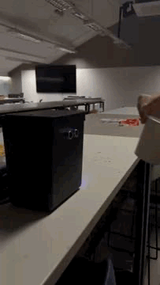

Resultado do Projeto
O projeto resultou em uma lixeira automática funcional, capaz de abrir e fechar sua tampa sem nenhum contato manual. O sistema responde rapidamente à aproximação da mão, proporcionando mais higiene e praticidade no descarte de resíduos.
A solução demonstrou ser eficaz em ambientes como cozinhas, banheiros e locais públicos, reduzindo o risco de contaminação por contato e promovendo hábitos sustentáveis. O sistema é leve, silencioso e pode ser adaptado a diferentes tipos de recipientes.

Funcionamento real da lixeira automática controlada por Arduino